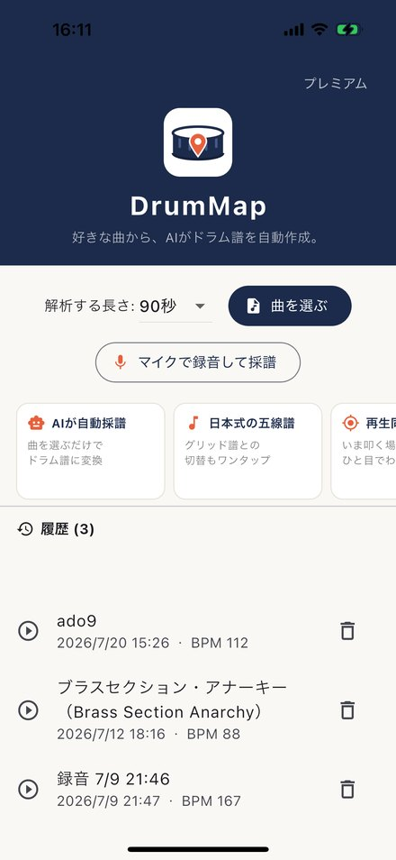
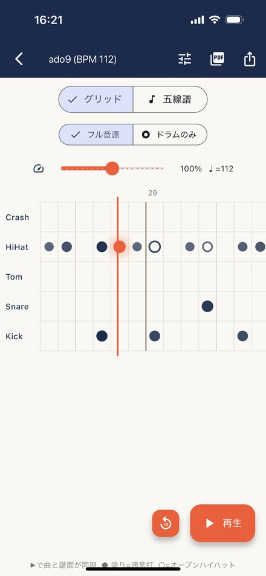
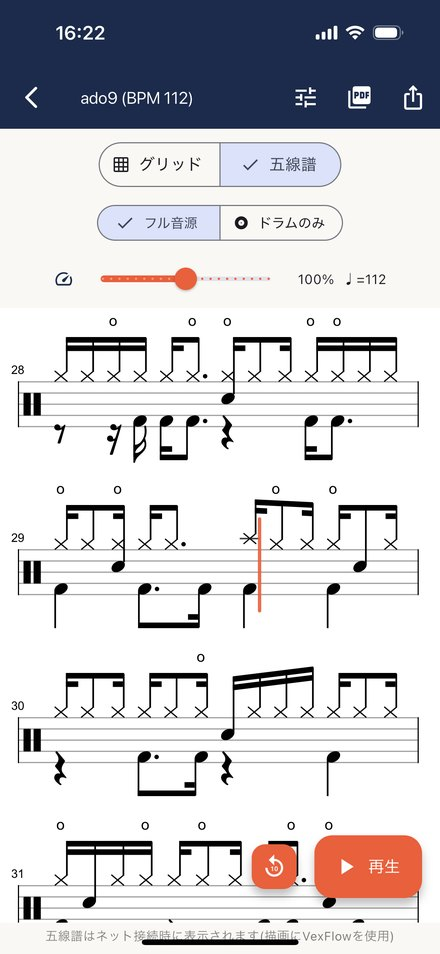

好きな曲から、AIがドラム譜を自動作成。
曲ファイルを選ぶだけ。AIがドラムパートを聴き取り、譜面に変換します。
バスドラは符幹下向きの見慣れた形式。グリッド譜との切り替えもワンタップ。
曲の再生に合わせて譜面上のカーソルが移動。いま叩く場所がひと目でわかります。
AIが分離したドラムだけの音源で、細かいフレーズも聴き取れます。
流れている音楽をマイクで録音して、そのまま採譜できます。
譜面の聞きたい場所をタップするとそこへジャンプ。10秒戻るボタンやカーソルの微調整も。
五線譜をそのままPDFに。印刷して譜面台に置いたり、仲間に共有できます。
4/4拍子・テンポ情報つきのGM準拠MIDI。MuseScore等でそのまま美しいドラム譜になります。
スマホ内の曲ファイルを選ぶか、マイクで録音
クラウドのAIが1〜3分でドラムパートを解析
再生と同期する譜面で、すぐに練習開始



サブスクリプションは自動更新です。App Store / Google Playの設定からいつでも解約できます。
・採譜はAIによる自動処理であり、結果の正確性を保証するものではありません。
・採譜にはインターネット接続が必要です。
・採譜結果はご自身の練習・学習など私的利用の範囲でご利用ください。